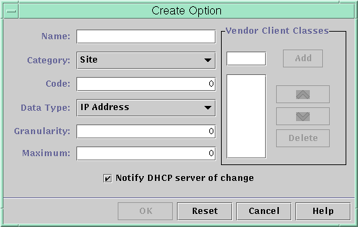

Previous
Previous
 How to Create a DHCP Macro (dhtadm)
How to Create a DHCP Macro (dhtadm)
Become superuser or assume a role or user name that is assigned to the DHCP Management profile.
For more information about the DHCP Management profile, see Setting Up User Access to DHCP Commands.
Roles contain authorizations and privileged commands. For more information about roles, see "Configuring RBAC (Task Map)" in System Administration Guide: Security Services.
Create a macro by typing a command of the following format:
# dhtadm -A -m macroname -d ':option=value:option=value:option=value:' -g
There is no limit to the number of option=value pairs that can be included in the argument to -d. The argument must begin and end with colons, with colons between each option=value pair. The complete string must be enclosed in quotation marks.
For example, to create the macro bluenote, type the following command:
# dhtadm -A -m bluenote -d ':Router=10.63.6.121\ :LeaseNeg=_NULL_VALUE:DNSserv=10.63.28.12:' -g
Note that if an option does not require a value, you must use _NULL_VALUE as the value for the option.
Deleting DHCP Macros
You might want to delete a macro from the DHCP service. For example, if you delete a network from the DHCP service, you can also delete the associated network macro.
You can use the dhtadm -D -m command or DHCP Manager to delete macros.
How to Delete a DHCP Macro (DHCP
Manager)
In DHCP Manager, select the Macros tab.
See How to Start and Stop DHCP Manager for information about DHCP Manager.
Select the macro to delete.
The Delete Macro dialog box prompts you to confirm that you want to delete the specified macro.
Select Notify DHCP Server of Change.
This selection tells the DHCP server to reread the dhcptab table to put the change into effect immediately after you click OK.
Click OK.
How to Delete a DHCP Macro (dhtadm)
Become superuser or assume a role or user name that is assigned to the DHCP Management profile.
For more information about the DHCP Management profile, see Setting Up User Access to DHCP Commands.
Roles contain authorizations and privileged commands. For more information about roles, see "Configuring RBAC (Task Map)" in System Administration Guide: Security Services.
Delete a macro by typing a command of the following format:
# dhtadm -D -m macroname -g
For example, to delete the macro bluenote, you would type the following command:
# dhtadm -D -m bluenote -g
Working With DHCP Options (Task Map)
Options are keywords for network configuration parameters that the DHCP server can pass to clients. In the Solaris DHCP service, you cannot create, delete, or modify the standard DHCP options. The standard options are defined by the DHCP protocol, so the options cannot change. You can only perform tasks on options that you create for your site. For this reason, when you first set up your DHCP service, the Options tab in DHCP Manager is empty until you create options for your site.
If you create options on the DHCP server, you must also add information about the options on the DHCP client. For the Solaris DHCP client, you must edit the /etc/dhcp/inittab file to add entries for the new options. See the dhcp_inittab(4) man page for more information about this file.
If you have DHCP clients that are not Solaris clients, refer to the documentation for those clients for information about adding options or symbols. See About DHCP Options for more information about options in Solaris DHCP.
You can use either DHCP Manager or the dhtadm command to create, modify, or delete options.
Tip - Options are called symbols in the DHCP literature. The dhtadm command and its related man page also refer to options as symbols.
The following task map lists tasks that you must perform to create, modify, and delete DHCP options. The task map contains links to procedures for the tasks.
Task | Description | For Instructions |
|---|---|---|
Create DHCP options. | Add new options for information not covered by a standard DHCP option. | How to Create DHCP Options (DHCP Manager) |
Modify DHCP options. | Change properties of DHCP options you have created. | |
Delete DHCP options. | Remove DHCP options that you have created. |
Before you create DHCP options, you should be familiar with the option properties listed in the following table.
Table 15-5 DHCP Option Properties
Option Property | Description |
|---|---|
Category | The category of an option must be one of the following:
|
Code | The code is a unique number that you assign to an option. The same code cannot be used for any other option within its option category. The code must be appropriate for the option category:
|
Data type | The data type specifies what kind of data can be assigned as a value for the option. The valid data types are described in the following list.
|
Granularity | The granularity specifies how many "instances" of the data type are needed to represent a complete option value. For example, a data type of IP and a granularity of 2 would mean that the option value must contain two IP addresses. |
Maximum | The maximum number of values that can be specified for the option. For example, suppose the maximum is 2, the granularity is 2, and the data type is IP. In this case, the option value could contain a maximum of two pairs of IP addresses. |
Vendor client classes | This option is available only when the option category is Vendor. Vendor client classes identify the client classes with which the Vendor option is associated. The class is an ASCII string that represents the client machine type or operating system. For example, the class string for some models of Sun workstations is SUNW.Sun-Blade-100. This type of option enables you to define configuration parameters that are passed to all clients of the same class, and only clients of that class. You can specify multiple client classes. Only those DHCP clients with a client class value that matches a class that you specify receive the options scoped by that class. The client class is determined by the vendor of the DHCP client. For DHCP clients that are not Solaris clients, refer to the vendor documentation for the DHCP client for the client class. For Solaris clients, the Vendor client class can be obtained by typing the uname -i command on the client. To specify the Vendor client class, substitute periods for any commas in the string returned by the uname command. For example, if the string SUNW,Sun-Blade-100 is returned by the uname -i command, you should specify the Vendor client class as SUNW.Sun-Blade-100. |
Creating DHCP Options
If you need to pass client information for which there is not already an existing option in the DHCP protocol, you can create an option. See the dhcp_inittab(4) man page for a list of all the options that are defined in Solaris DHCP before you create your own option.
You can use the dhtadm -A -s command or DHCP Manager's Create Option dialog box to create new options.
The following figure shows DHCP Manager's Create Option dialog box.
Figure 15-17 Create Option Dialog Box in DHCP Manager
